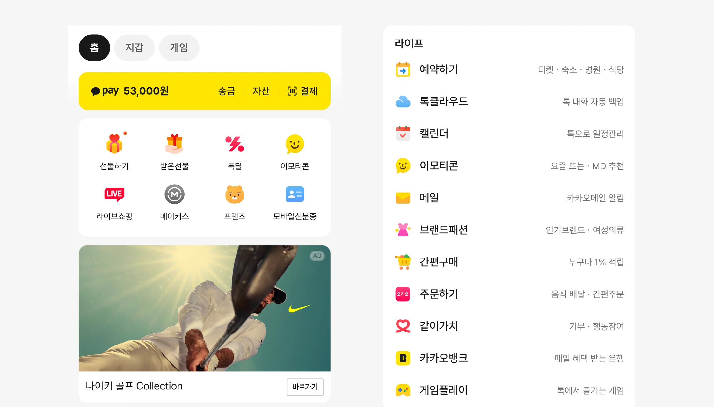
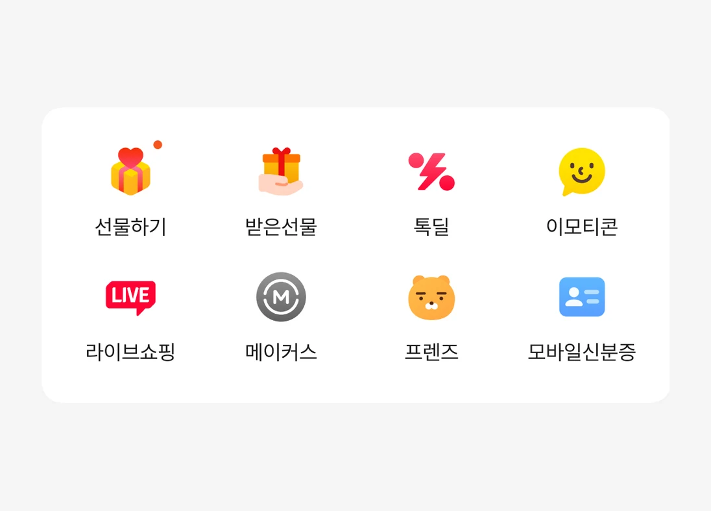
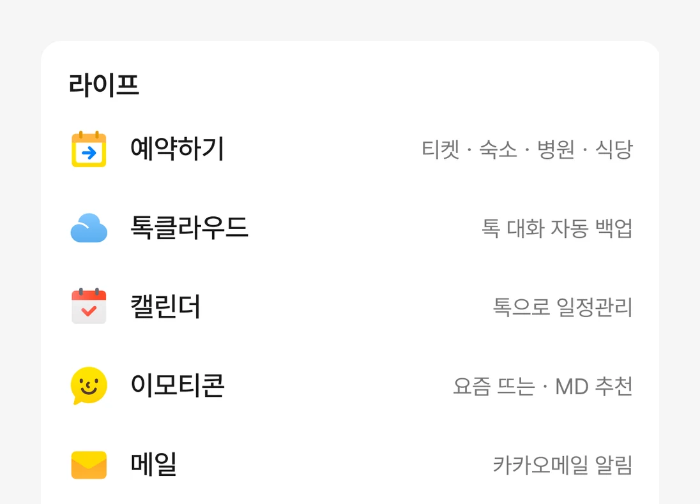

Experiments · Case 03
그리드·리스트 혼합 UI 실험
리스트형 탐색은 더 많은 서비스를 보여줬지만, 서비스 클릭은 줄었습니다. 첫 화면의 그리드는 유지하고 그 아래에 카테고리 리스트를 두는 혼합 구조로, 두 방식의 역할을 나눌 수 있는지 실험했습니다.

출발점
앞선 리스트형 탐색 실험에서 채택한 카테고리 리스트안은 광고 매출을 늘렸지만, 서비스 클릭은 9% 줄었습니다. 같은 실험에서 선물하기를 리스트 맨 위에 두자 감소 폭이 3분의 1로 줄었습니다. 서비스가 첫 화면의 어디에 놓이는지가 클릭을 좌우하고 있었습니다.
그리드는 자주 쓰는 서비스에 빠르게 닿게 하고, 리스트는 더 많은 서비스를 설명과 함께 보여줍니다. 둘 중 하나를 고르는 대신 역할을 나누기로 했습니다. 이 방향으로 직접 테스트하던 혼합안이 다음 실험의 공식 실험안이 됐습니다.
디자인
주요 서비스는 첫 화면 그리드에서 바로 찾고, 나머지는 카테고리 리스트에서 둘러보도록 구성했습니다. 리스트는 서비스 이름 옆에 한 줄 설명을 붙여, 이름만으로는 알기 어려운 서비스도 고를 수 있게 했습니다.


그리드의 행과 열, 첫 화면에 둘 서비스, 리스트의 중복 노출 여부만 달리해 네 가지 안을 만들었습니다. A는 4×3, B와 D는 4×2, C는 5×2 그리드를 쓰고, D는 그리드의 서비스를 리스트에도 다시 보여줬습니다. 실험안의 아이콘은 디자인 검토를 거쳐 홈 화면 다른 영역과 같은 그래픽 아이콘으로 맞췄습니다.
결과를 확인하며
중간 결과에서 서비스 클릭은 네 안 모두 대조군보다 줄었습니다. 커머스 가드레일은 네 안 모두 지켰습니다.
지표를 나눠 보니 알림이 없는 서비스의 클릭은 모든 안에서 오히려 늘었습니다. 줄어든 것은 알림 점이 켜진 서비스로 돌아가는 클릭이었고, 알림이 많은 날일수록 감소가 컸습니다.
알림 없는 서비스 클릭 +1.5~6.8%, 알림 켜진 서비스 클릭 −10.3~17.1% · Android, 집행 첫 14일, 대조군 대비
일별 추이를 확인하다가 iOS 일부 버전에서 실험안의 하단 탭 알림 점이 표시되지 않는 문제를 발견했습니다. 바로 공유했고, 클라이언트 핫픽스가 적용돼 실험은 중단 없이 이어졌습니다. 최종 판정은 수정된 버전을 기준으로 하기로 했습니다.
이 문제가 클릭 감소의 유일한 원인이라고 보지는 않습니다. 그래픽 아이콘 위에서 알림 점이 덜 눈에 띄는지도 함께 확인하고 있습니다.
다음 판단
중간 결과를 받아, 자주 쓰던 서비스로 더 쉽게 돌아갈 수 있는 방법을 다시 설계하고 있습니다. 중복 노출안을 기준으로 최근 사용 서비스, 직접 고정하는 서비스, 카테고리 바로가기, 지금 챙길 일을 보여주는 카드를 검토 중입니다.
더 많은 서비스를 보여주는 것과 필요한 서비스를 쉽게 찾게 하는 것은 같은 문제가 아니었습니다. 최종 결과는 실험이 끝나면 반영합니다.
역할
리드한 것
- 혼합 UI 실험안 디자인
- 실험안 UI·가이드·디자인 QA
- 중간 지표 조회와 이상 징후 확인
- 후속 보완안 설계
함께 한 것
- 실험 조건·판정 지표 — PM, 데이터 분석가
- 통계 검정 — 데이터 분석가
- 알림 표시 문제 수정 — 클라이언트 개발